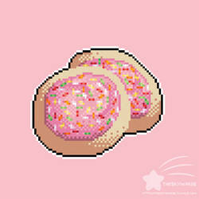

Sugar Cookie Recipe

Description
Whenever you make these cookies for someone, be sure to bring along several copies of the recipe! You will be asked for it, I promise! NOTE: I make icing with confectioners' sugar and milk. I make it fairly thin, as I 'paint' the icing on the cookies with a pastry brush. Thin enough to spread easily but not so thin that it just makes your cookies wet and runs off.
Ingredients
- Butter
- Sugar
- Eggs
- Vanilla Extract
- Flour
- Baking powder
- Salt
Steps
- Cream together butter and sugar in a large bowl with an electric mixer until smooth. Beat in eggs and vanilla. Stir in flour, baking powder, and salt. Cover, and chill dough for at least 1 hour (or overnight).
- Preheat oven to 400 degrees F (200 degrees C).
- Lightly dust a work surface with flour. Roll out dough to 1/4 to 1/2 inch thickness. Cut into shapes with any cookie cutter. Place cookies 1 inch apart on ungreased baking sheets.
- Bake in the preheated oven until cookies are lightly browned, 6 to 8 minutes. Carefully transfer cookies to a wire rack and cool completely before decorating.
Main Page